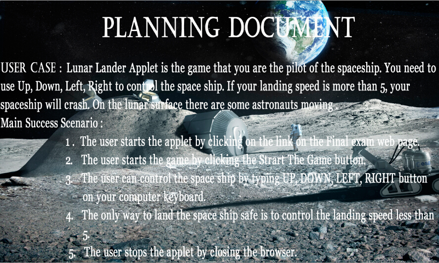
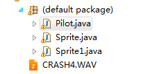
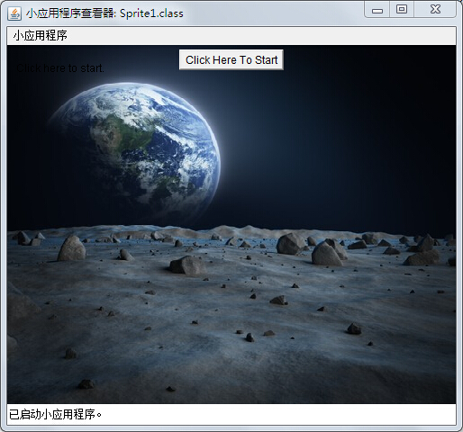
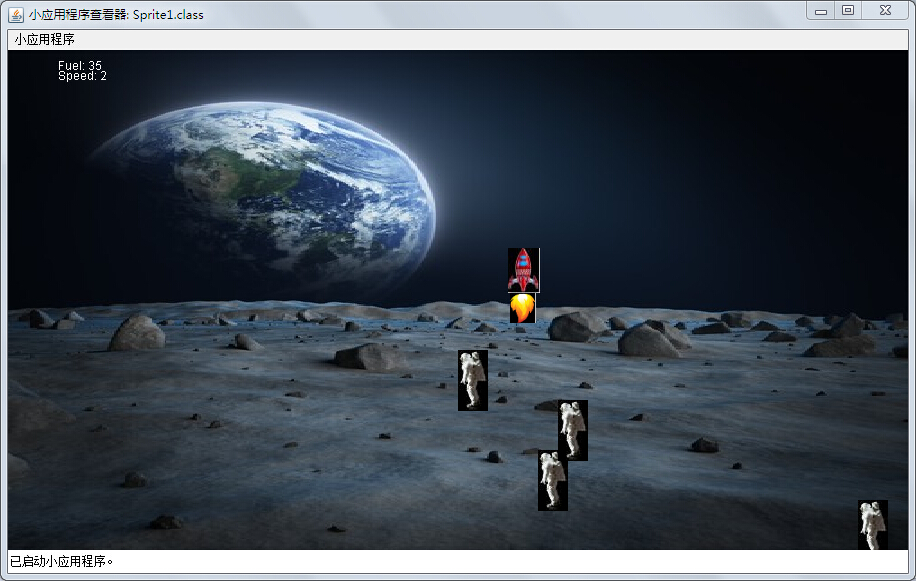
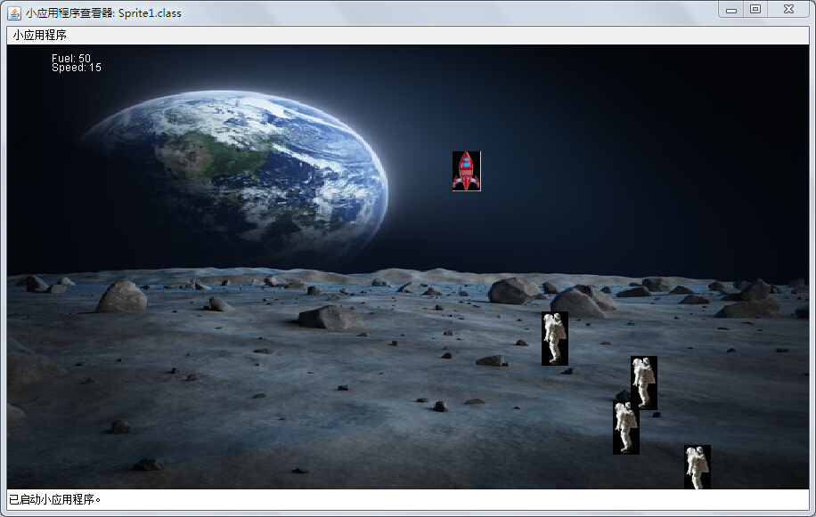
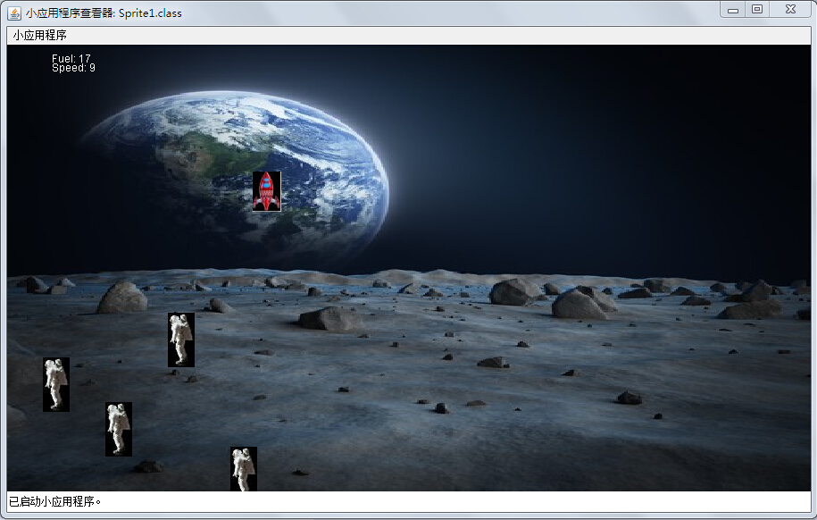
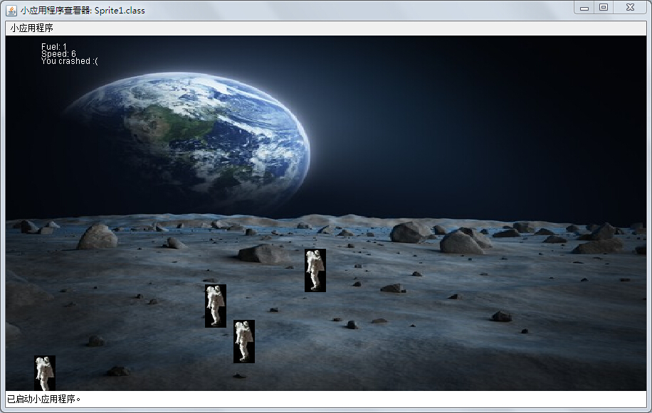
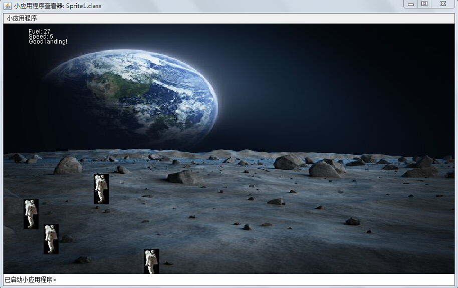

import java.awt.geom.AffineTransform;
import java.awt.image.BufferedImage;
import java.awt.*;
import java.awt.event.MouseListener;
import java.awt.event.MouseEvent;
import java.awt.event.KeyListener;
import java.awt.event.KeyEvent;
import java.io.File;
import java.io.IOException;
import javax.imageio.ImageIO;
public class Sprite1 extends java.applet.Applet implements
MouseListener, KeyListener, Runnable{
boolean md;
int k=0;
boolean keyIsDown [] = new boolean[KeyEvent.KEY_LAST];
public void mousePressed(MouseEvent e) {md=true;}
public void mouseReleased(MouseEvent e){md=false;}
public void mouseEntered(MouseEvent e) { }
public void mouseExited(MouseEvent e) { }
public void keyTyped(KeyEvent e) { }
public void keyPressed(KeyEvent e){keyIsDown[e.getKeyCode()]=true;}
public void keyReleased(KeyEvent e){keyIsDown[e.getKeyCode()]=false;}
int frame;
int delay;
Thread animator=null;
Dimension offDimension;
Image offImage;
Graphics2D offGraphics;
Sprite s;
Button startButton;
private Image img = null;
private Pilot p1 = new Pilot(20, 400);
private Pilot p2 = new Pilot(60, 300);
private Pilot p3 = new Pilot(100, 350);
private Pilot p4 = new Pilot(400, 450);
public void init() {
this.setSize(900, 500);
img = this.getImage(this.getCodeBase(),"./background.jpg");
String str = getParameter("fps");
int fps = (str != null) ? Integer.parseInt(str) : 10;
delay = (fps > 0) ? (1000 / fps) : 100;
//setLayout(new FlowLayout());
startButton = new java.awt.Button("Click Here To Start");
add(startButton);
startButton.addMouseListener(this);
}
public void mouseClicked(MouseEvent e) {
//The user cannot control unless the applet has focus.
//We need a "click to start"
if (s==null){
s = new Sprite();
animator = new Thread(this);
animator.start();
remove(startButton);
this.requestFocus();
}
}
public void start() {
Graphics g = this.getGraphics();
g.setColor(Color.black);
g.drawString("Click to start...",20,20);
g.fillRect(50,50,20,20);
addMouseListener(this);
addKeyListener(this);
}
public void run() {
// Remember the starting time
long tm = System.currentTimeMillis();
while (Thread.currentThread() == animator) {
// Display the next frame of animation.
this.repaint();
// Delay depending on how far we are behind.
try {
tm += delay;
Thread.sleep(Math.max(0, tm - System.currentTimeMillis()));
} catch (InterruptedException e) {
break;
}
// Advance the frame
frame++;
if(this.s != null){
s.tick(keyIsDown);
}
}
}
public void stop() {
animator = null;
offImage = null;
offGraphics = null;
this.s = null;
}
/**
* Update a frame of animation.
*/
public void update(Graphics g) {
Dimension d = size();
g.drawImage(img,0, 0, (int)getBounds().getWidth(), (int)getBounds().getHeight(), this);
if (animator==null){
g.setColor(Color.black);
g.drawString("Click here to start.",10,30);
return;
}
// Create the offscreen graphics context
if ((offGraphics == null) || (d.width != offDimension.width) || (d.height != offDimension.height)) {
offDimension = d;
offImage = createImage(d.width, d.height);
offGraphics = (Graphics2D)offImage.getGraphics();
}
// Erase the previous image
offGraphics.setColor(getBackground());
offGraphics.drawImage(img,0, 0, (int)getBounds().getWidth(), (int)getBounds().getHeight(), this);
offGraphics.setColor(Color.black);
// Paint the frame into the image
AffineTransform tmp = offGraphics.getTransform();
s.paintFrame(offGraphics,keyIsDown);
p1.paint(offGraphics);
p2.paint(offGraphics);
p3.paint(offGraphics);
p4.paint(offGraphics);
offGraphics.setTransform(tmp);
// Paint the image onto the screen
g.drawImage(offImage, 0, 0, null);
if(this.s.isCrashed()){
this.stop();
}
}
public void paint(Graphics g) {
this.update(g);
}
}
import java.applet.Applet;
import java.applet.AudioClip;
import java.awt.Color;
import java.awt.Graphics;
import java.awt.Graphics2D;
import java.awt.Image;
import java.awt.event.KeyEvent;
import java.awt.image.BufferedImage;
import java.io.File;
import java.io.IOException;
import java.net.MalformedURLException;
import java.net.URL;
import javax.imageio.ImageIO;
public class Sprite{
int yv=0;
int y=0;
int x=500;
int fuel = 50;
boolean crashed=false;
public boolean isCrashed() {
return crashed;
}
public void setCrashed(boolean crashed) {
this.crashed = crashed;
}
private BufferedImage img = null;
private BufferedImage img1 = null;
public Sprite(){
try {
img = ImageIO.read((new File("./sprite.jpg")));
img1 = ImageIO.read((new File("./fire.jpg")));
} catch (IOException e) {
// TODO Auto-generated catch block
e.printStackTrace();
}
}
public void tick(boolean[] kid){
if (crashed){
return;
}
yv++;
if (kid[KeyEvent.VK_UP] && fuel>0){
yv-=2;
fuel--;
}
if (kid[KeyEvent.VK_LEFT] && fuel>0){
x-=5;
}
if (kid[KeyEvent.VK_RIGHT] && fuel>0){
x+=5;
}
y+=yv;
if (y>380){
crashed = true;
}
}
public void paintFrame(Graphics2D g,boolean[]kid) {
g.setColor(Color.WHITE);
g.drawString("Fuel: "+fuel,50,20);
g.drawString("Speed: "+yv,50,30);
if (!crashed){
g.drawImage(img,x, y, null);
if (kid[KeyEvent.VK_UP] && fuel>0){
g.drawImage(img1,x+2, y+img.getHeight(), null);
}
}else{
if (yv>5){
g.drawString("You crashed :(",50,40);
URL cb = null;
File f = new File("./CRASH4.WAV");
try {
cb = f.toURL();
} catch (MalformedURLException e) {
// TODO Auto-generated catch block
e.printStackTrace();
}
AudioClip aau;
aau = Applet.newAudioClip(cb);
aau.play();
}
else
g.drawString("Good landing!",50,40);
}
}
}
import java.awt.Color;
import java.awt.Graphics2D;
import java.awt.image.BufferedImage;
import java.io.File;
import java.io.IOException;
import javax.imageio.ImageIO;
public class Pilot implements Runnable{
private int x;
private int y;
private BufferedImage bf = null;
private Thread tr = new Thread(this);
private String Director;
public Pilot(int _x, int _y){
this.x = _x;
this.y = _y;
this.Director = "left";
try {
this.bf = ImageIO.read((new File("./pilot.jpg")));
} catch (IOException e) {
// TODO Auto-generated catch block
e.printStackTrace();
}
tr.start();
}
@Override
public void run() {
while(true){
try{
if(this.Director == "right"){
this.x += 30;
if(this.x >= 870){
this.Director = "left";
}
}else{
this.x -= 30;
if(this.x <= 30){
this.Director = "right";
}
}
tr.sleep(200);
}catch(Exception e){
e.printStackTrace();
}
}
}
public void paint(Graphics2D g){
g.setColor(Color.BLACK);
g.drawImage(this.bf,x, y, null);
}
}






